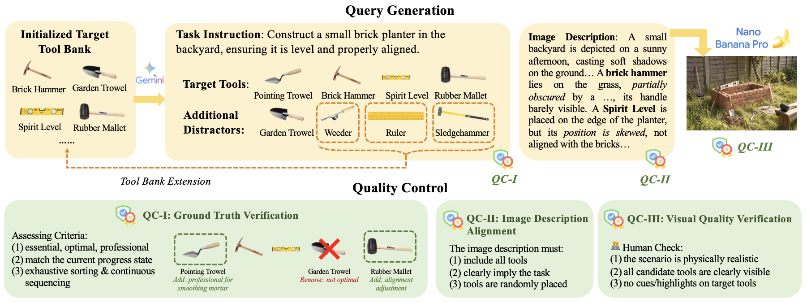
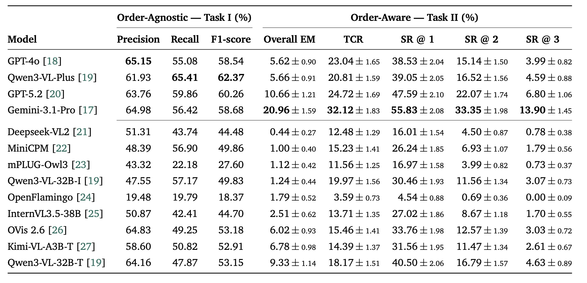
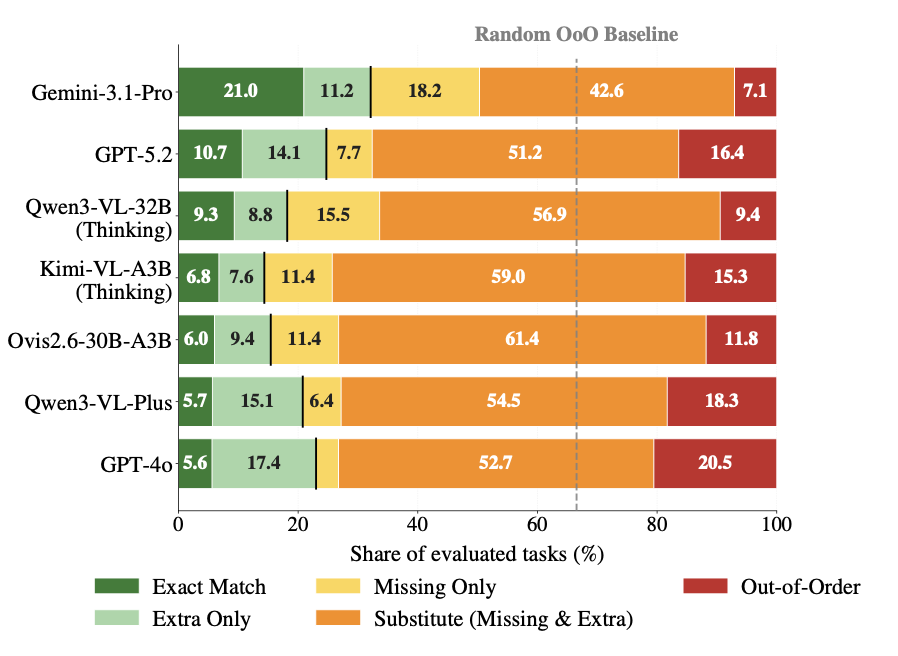

🪐 Beyond APIs: Probing the Limits of MLLMs in Physical Tool Use

📘 Abstract
🧠 Method
PhysTool‑Bench is constructed through a semi‑automated pipeline with three stages: (1) Tool bank initialization & extension (2,678 tools from 57 UNSPSC segments), (2) Query generation with target tool combinations (1–3 tools per scene), step labeling, natural language instructions, and distractor injection, followed by realistic rendering using Nano Banana Pro, and (3) multi‑stage quality assurance (Gemini‑3.1 auditing, programmatic description‑image alignment, human review).
Evaluation is zero‑shot. Task I measures raw visual enumeration (precision, recall, F1). Task II evaluates planning with metrics including Exact Match (EM), Task‑Completable Rate (TCR), Success@k, and order‑agnostic F1, plus root‑cause error classification.

📊 Results


Key findings: Even the best models (GPT‑4o, Gemini‑1.5‑Pro) achieve low Exact Match on Task II (≈15–25%). Task‑Completable Rate is higher (≈40–55%), but models frequently substitute functionally similar tools or reorder steps incorrectly. Open‑weight models like MiniCPM‑V and mPLUG‑Owl3 lag behind by 10–20% on F1. Error analysis shows that functional substitution (e.g., replacing a torque wrench with a regular wrench) is the dominant failure mode, indicating that MLLMs lack robust physical commonsense beyond visual recognition.
📚 BibTeX
@article{PhysTool-Bench2026,
title = {Beyond APIs: Probing the Limits of MLLMs in Physical Tool Use},
author = {Zhixin Ma and Yutong Zhou and Yongqi Li and Chong Wah Ngo and Wenjie Li},
year = {2026},
eprint = {xxxx.xxxxx},
archivePrefix = {arXiv},
primaryClass = {cs.AI}
}
🙏 Acknowledgements
We would like to thank the contributors, open‑source projects, and research communities whose work made PhysTool‑Bench possible.
- 🖼️ Image Generation – Nano Banana Pro (synthetic scene rendering)
- 🧠 Open‑weight Models – MiniCPM‑V, mPLUG‑Owl3, OpenFlamingo, InternVL, DeepSeek‑VL, Kimi‑VL, Ovis
- 💻 Code & Libraries – 🤗 Transformers, vLLM, PyTorch, PIL, requests
- 📚 Dataset & Classification – UNSPSC, manual annotation & QC team
This project is licensed under the MIT License. Please refer to the LICENSE file for full details.
Maintained by Yutong Zhou. Updated on 2026.6.9.